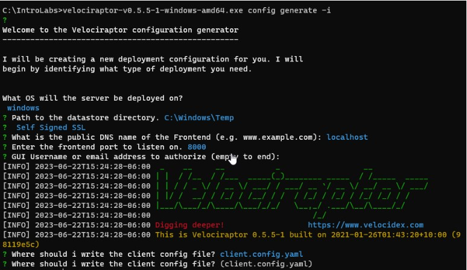
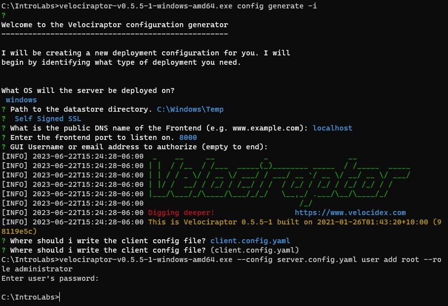
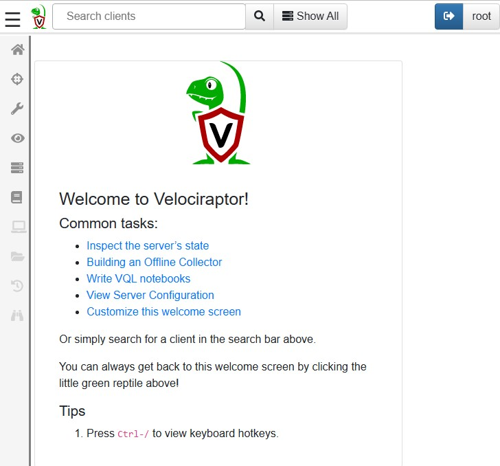
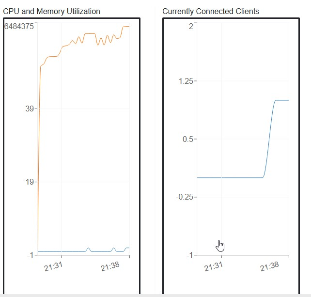
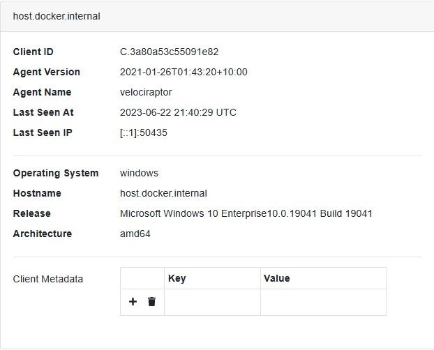
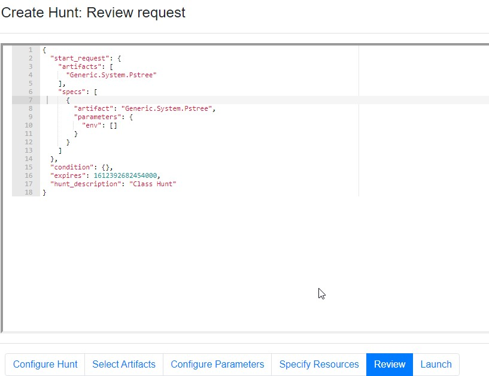
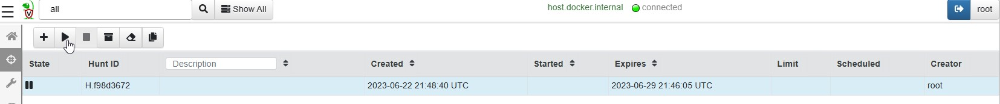
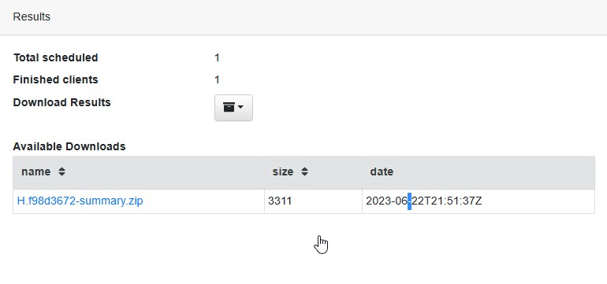
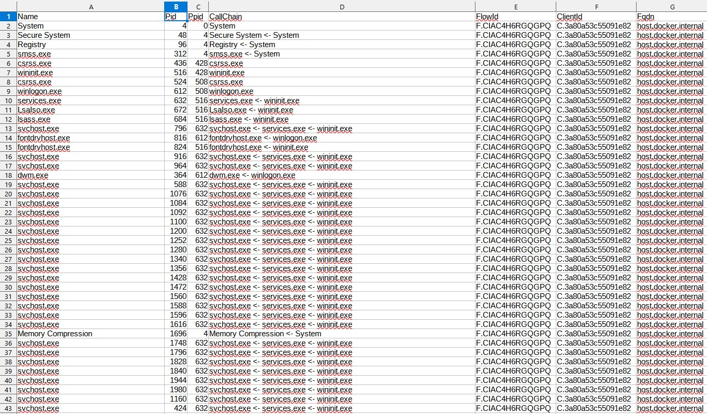

Velociraptor
Introduction
This project provides instructions for setting up Velociraptor, an open-source digital forensics and incident response tool, and exploring its features. Velociraptor allows you to investigate security incidents, analyze suspicious behavior, and perform targeted searches on endpoints.Let’s get started: velociraptor-v0.5.5-1-windows-amd64.exe config generate -i
In this instance just make everything default and do not use Google DNS Server
Now, let’s add a GUI user: velociraptor-v0.5.5-1-windows-amd64.exe --config server.config.yaml user add root --role administrator
When it asks for the password, please choose a password you will remember. When finished, it should look similar to this:
Now, lets run the msi to load the proper files to the proper directories: velociraptor-v0.5.5-1-windows-amd64.msi
And start the server: velociraptor-v0.5.5-1-windows-amd64.exe --config server.config.yaml frontend -v
There will be some red. Don’t panic.
Next, let’s surf to the GUI and see if it worked!
https://127.0.0.1:8889 When you load the page, there will be an SSL error about the self-signed cert. That is fine. Select Advanced then proceed to 127.0.0.1 When it asks for the Username and Password, please enter root and the password you chose earlier. Please select Inspect the server's state.
Good enough
Next, we need to start the client. Lucky for us, it is the same executable.
We will need to open another Windows Command Prompt.
Then Navigate to the IntroLabs directory:
cd \IntroLabs
Next, we will need to start the client. To do this will need to run the MSI first:
velociraptor-v0.5.5-1-windows-amd64.msi
When you get the pop up, select Run. This will install the proper libraries and files.
Next, we will start the client.
velociraptor-v0.5.5-1-windows-amd64.exe --config client.config.yaml client -v
Now, let’s go back to the GUI and select the Home button.
You should see one connected client.

Now let’s look at what we can do with this.
First things first, this is not necessarily a detection platform. It is designed to allow you to dig when you
get an alert on malware signatures or from suspicious traffic.
So please, keep in mind, it is not a replacement for AV!
So that said, let’s look around.
First, let’s "Show All" Clients.
If you select that client, you can get additional information about that system.

Now, select Shell.
This allows us to run commands on the target system. Think of the commands that we ran from the Windows CLI,
we can run those here too.
Please select the PowerShell box and select Cmd.
Now, enter netstat -naob in the Cmd box and select Launch.
This will not display the results right away. To see the results, select the Eye icon with your netstat
command below:
Now, let’s do a Hunt. Please select the Hunt icon.
To start a Hunt, please select the + icon.
Please name your Hunt, then select "Select Artifacts" on the bottom.
We are going to keep this simple for this lab. Please select Generic.System.Pstree.
Then, Review on the bottom.

We now have an overview of what is going to be run on all systems... Which is only one.
Now select Launch.
Once you select Launch, it will start the Hunt and load it in the que.

Please select our Hunt. Now, we can run it. Please press the Play button above.
When you get the pop-up, select Run it!
This will take a few moments.
When done, you will see Total scheduled is 1 and Finished Clients is 1.
You can also download the results.
Please select Download Results.
Then, CSV Only.
This will create a zip with the output.
Please download that by clicking on the zip file.

Go ahead and open the zip file.
